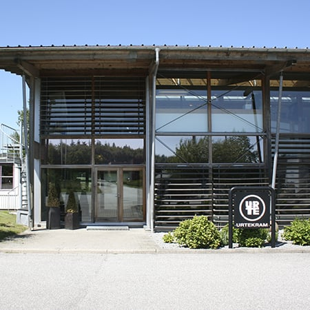

Om Urtekram
Økologisk pioner siden 1972
Urtekram blev etableret i Larsbjørnsstræde i København som en lille købmandsbutik i en kælder. Herfra solgtes varer i løsvægt og lokale råvarer – som en landhandel i byen.
Urtekram var allerede dengang forud for sin tid og sortimentet bestod primært af økologiske, vegetariske og plantebaserede varer som f.eks. som tofu, sojasauce, tang, gomasio (ristet sesam) og sprøde Risgaletter.
I dag fremstilles en stor del af Urtekram sortimentet i Mariager i Nordjylland blandt andet tahin, nøddesmør, mysli, risgaletter og de skønne økologiske myslier.
Vores mission er stadig den sammen som for 50 år siden – Urtekram skal gøre det let at vælge økologi i hverdagen og passe til en moderne, sund livsstil.
Vi vil drive den økologiske agenda med passion for at udvikle bæredygtige, velsmagende produkter af høj kvalitet.
Siden 2015 har Urtekram været ejet af Midsona AB i Malmø.
Måske har du set, at vi har flere nordiske sprog på vores emballager? Det er fordi, at Urtekram også sælges i både Finland og Sverige.
Faktisk har Urtekram siden 2015 været en del af Midsona Danmark, som ejes af Midsona AB, der har hovedkontor i Malmø. Du kan læse mere om Midsona her.
